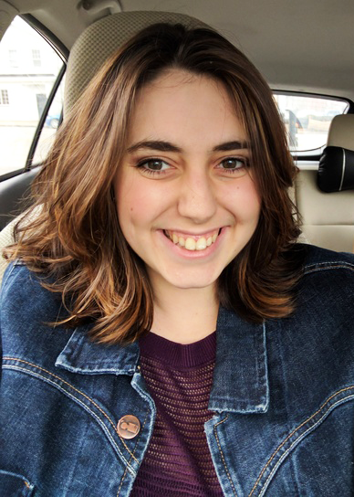

About Me

My name is Brianna Buttaccio and I grew up in Marion, NY. My favorite things to do are cook and go out to new restaurants to try new foods. I started my academic career at Monroe Community College where I completed an A.S. in Computer Engineering. I am currently completing a B.S. in Web and Mobile Computing. You can view my resume here.